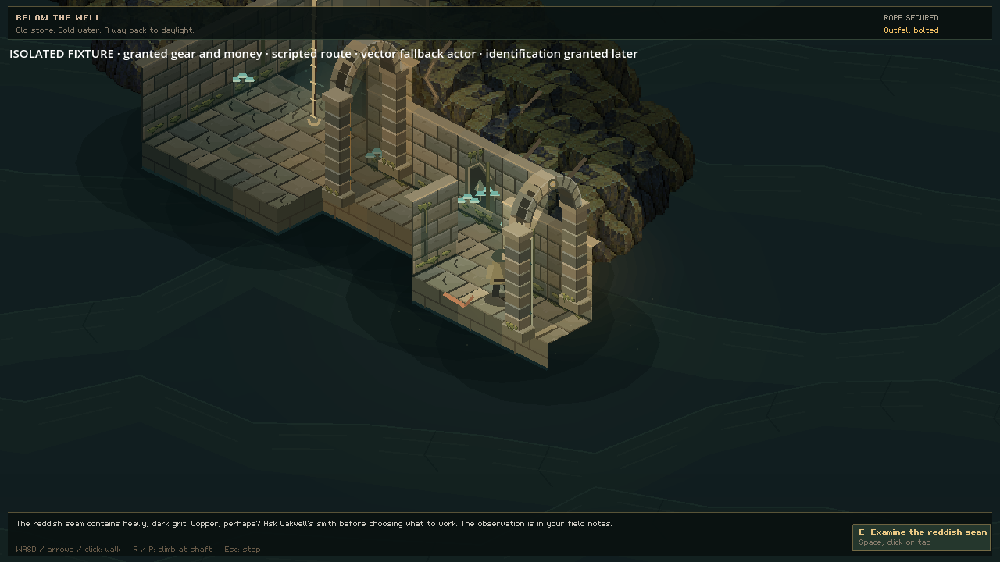

3 November 2026
A reason to return
A journey becomes more interesting when what you learn changes what you take on the next one.
Reddish grit catches in an outcrop outside Oakwell. More has washed through the grated outfall. The colour might suggest copper, but that is only a hypothesis. A conversation with the smith gives the weight and texture a meaning: iron ore, exposed in the old service passage below the well.
This expedition experiment joins places and actions already in Oakwell. There is a person to ask, a reason to prepare, a place to investigate and something useful to bring home. The smith does not lend you an invisible tool. A pick comes from Wenna's finite stock, and Edric's climbing supplies provide a safe way down.
You can also find the seam before noticing either surface sign. Examining the exposed rock records what you saw, giving you a question to take back to the smith. The journey can begin with a discovery below the well, followed by preparation and a return visit.

This isolated review scene stages the gear and route to check the discovery itself. Identification is supplied later for the test, as the caption declares. It checks the interaction with a stand-in traveller. Ordinary town playtesting remains pending.
What earns its place in the bag?
The seam yields iron ore and rough stone. Both need room in the satchel. You can work more of the small reserve, leave it for another visit, or turn back with what you have. Two rough stone can become a mortar and pestle through the existing bag action. Ore can answer a real workshop request when the smith has one open.
Two smaller discoveries sit along the dry walkway. A scoured gully makes the moving water worth noticing; maintenance scratches explain another way back to daylight. Neither is a compulsory stop. An optional itinerary organises the same observations, while contextual notes let you keep your own intentions.
The field notes begin with what you have actually noticed. Finding a clue gives the book a hypothesis to hold; asking about it adds a reason to choose particular tools. The optional itinerary follows that growing knowledge. Opening the book before setting out leaves the discovery yours to make.
One history to come home to
Connecting the journey exposed a less visible problem: the old underground save could restore a different copy of the traveller's belongings. Journey progress now joins the character's saved history, so ore, a worked seam and the way home travel together. Incompatible older histories are kept for recovery.
The book keeps the memory of the material you recovered after you have shaped it or handed it over. Its notes follow the history of the trip as your belongings change.
The automated checks cover finite resources, a full bag, repeated inputs and restored progress. An earlier scripted journey used ordinary Oakwell controls to ask the smith, buy the pick, return with materials and shape the stone into a mortar. A fresh process restored the same belongings and the worked seam. This remains an experiment awaiting uncoached testers. The full county connection, phone-scale review and session pacing still need their own evidence. The question for that first outing is simple: did finding something make you want to come back?